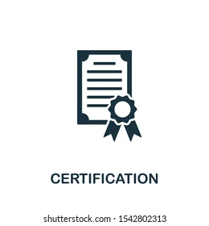
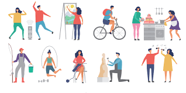
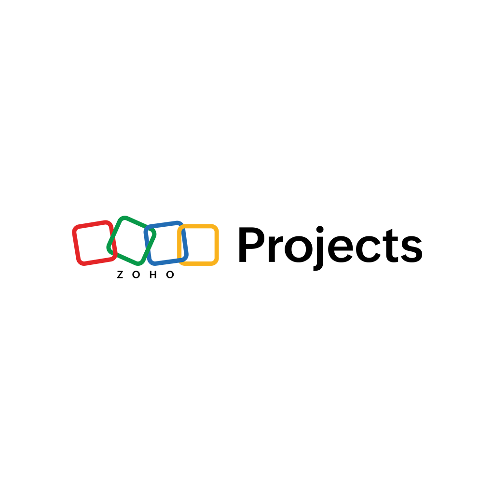

This is
Sage-Michael Brown
I am a graduate of both Guilford Technical Community College and North Carolina Agricultural and Technical State University
with an Associate of Information Technology and a Bachelor of Science in Information Technology. I am a hard-worker,
humble, persevering, and I hope to showcase these traits through what I present!

For my graduating project I pitched the idea of using discord to create a social space dedicated to enabling safety and free communication amongst NCAT students, utilizing the service and creating a monitoring bot that atonomously monitors, controls, and assigns roles to students. All student information would be placed in a database and after creating an account with Discord the user will be allowed to join once the bot verifies that a user attends the University.
Well, I
Graduated with Honors!

I graduated from North Carolina Agricultural and Technical State University in 2021 with my bachelor's in Information technology after transferring from Guilford Technical Community College in 2020. I have learned many different aspects in Information Technology, whether it being concepts, programming languages, or practices to use in the working world.
Attached below is my transcript.
I currently work on the technical side of a Telecommunication center in Florida as a day manager. I am tasked with communicating with the team in India and also maintaing the system on site within our office.

I am currently pursuing the CompTIA A+ exam at the end of this month, and I also hope to take the CISSP and CCNA exams sometime this year. Currently, these are my certificates that have been awarded over the years:
Google Data Analytics Certificate
Foundations of Cybersecurity
Google Data Analytics Certificate
Building with PowerBI

Growing up I had an amazing school and club balance, whether it be playing in badminton tournaments, enjoying cadet camps in the hills of Jamaica, or participating with the maintainingclub in a yearly competition in the First Tech Challenge Robotics in New York. Outside of that I thoroughly enjoy partaking in acts of community service that allow me to give back to the neighborhood and help where I can.

Here I plan to place projects that I do or have done to showcase my ability using different tools!
{kind=link}